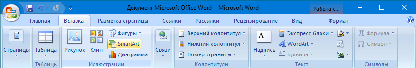
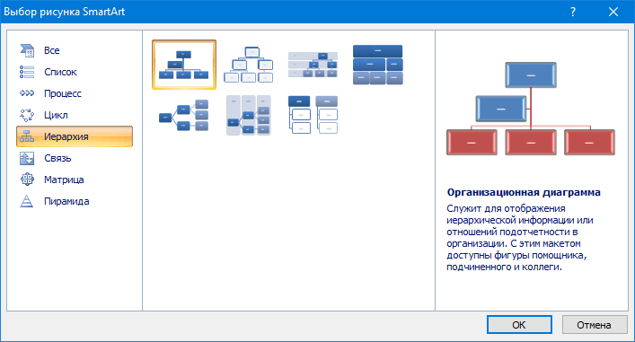
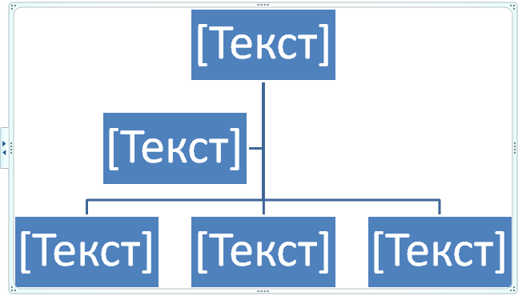
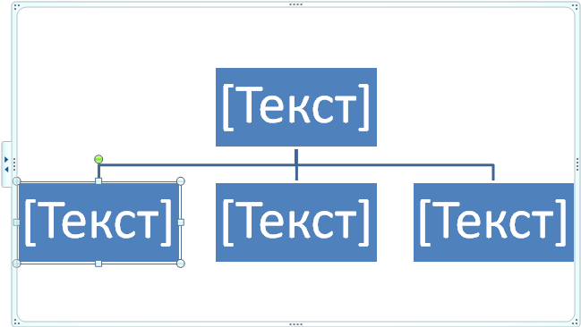
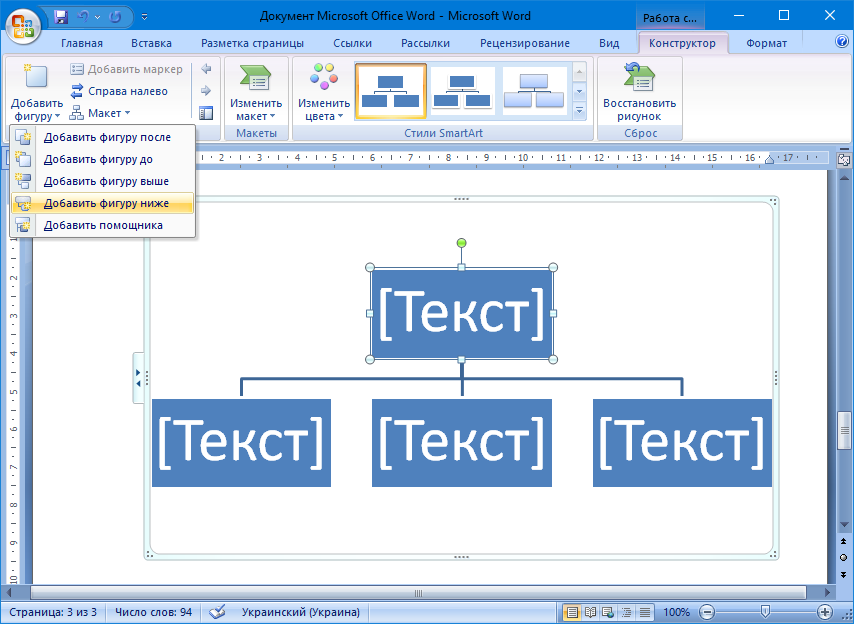
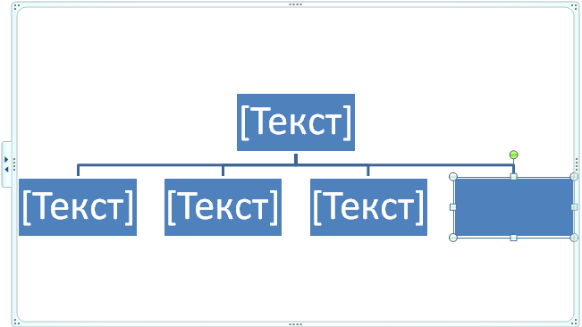
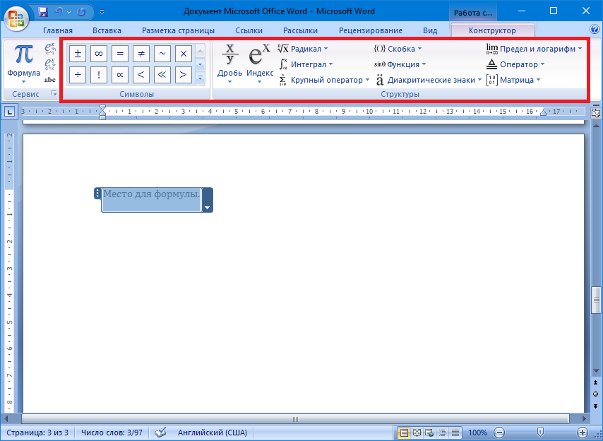
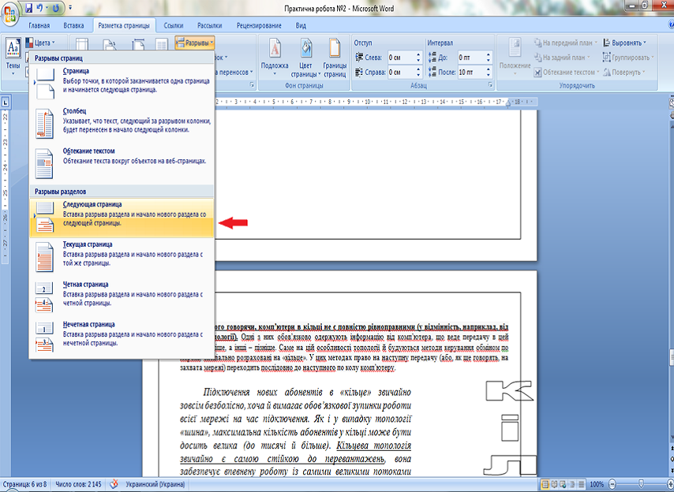
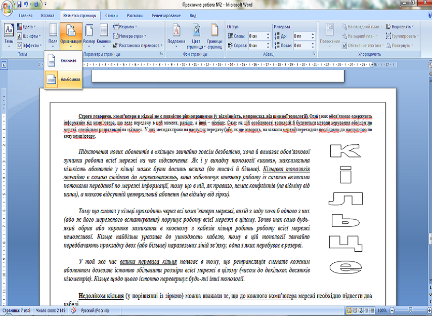
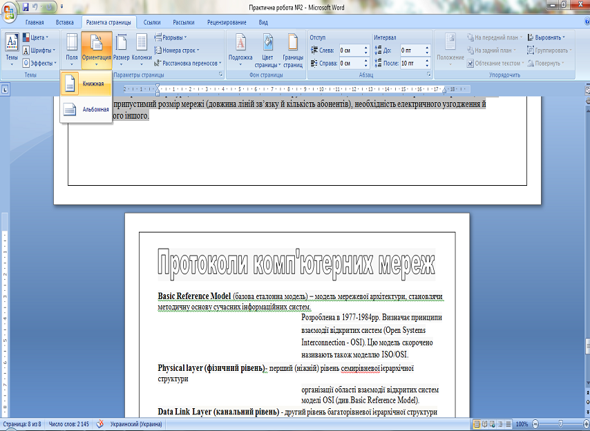

Теоретичний матеріал по виконанню практичних робіт
Створення малюнків в SmartArtДля цього необхідно перейти на вкладку «Вставка», в групі «Илюстрации» натиснути «SmartArt».
У вікні «Выбор рисунка SmartArt» на вкладці «Иерархия» обрати малюнок «Организационная диаграмма» та натиснути ОК.
Отримаємо наступне:
Далі видаляємо один прямокутник:
Виділяємо верхній прямокутник. На вкладці «Конструктор» натиснути «Добавить фигуру» та обрати «Добавить фигуру ниже».
В результаті отримаємо:
Додавання формул
Перейти на вкладку «Вставка», в групі «Символы» натиснути «Формула». З явиться місце для введення формули. На вкладці «Конструктор» ми можемо обрати структуру формули, в залежності від того, яка формула нам потрібна, а також спеціальні символи, які застосовуються у формулах.
 Додавання альбомної орієнтації до окремого аркушуДля цього необхідно встановити курсор на попередній сторінці, перейти на вкладку «Разметка страницы», обрати «Разрывы» і натиснути «Следующая страница»
Далі необхідно перейти на «Разметка страницы», обрати «Ориентация» и натиснути «Альбомная»
Оскількі всі наступні сторінки також отримали альбомну орієнтацію, необхідно знову виконати розрив сторінки на вкладці «Разрывы», «Следующая страница» і вже для наступних сторінок обрати книжну орієнтацію.
